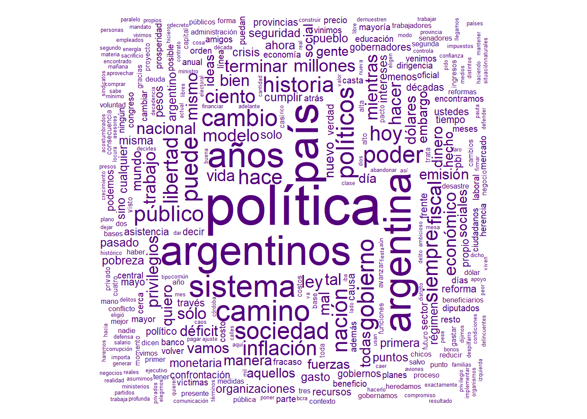
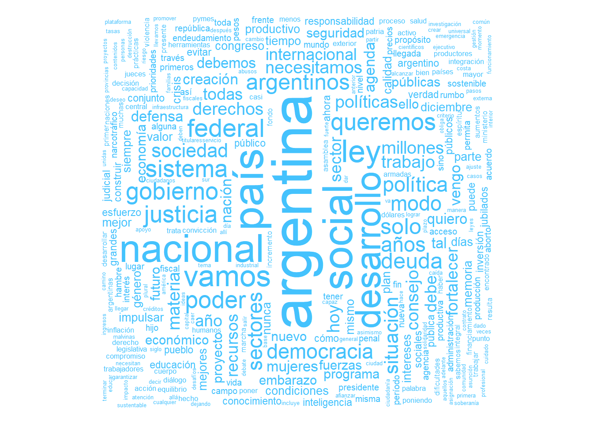
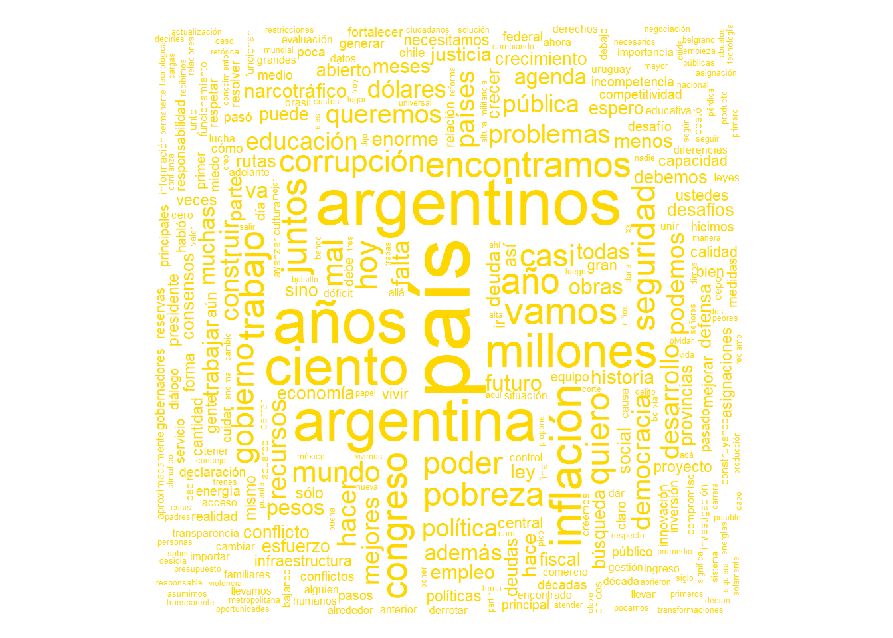

A continuación vamos a ver un breve análisis de texto acerca de los primeros discursos inaugurales de Asambleas Legislativas de Macri, Fernandez y Milei. El objetivo es evaluar cuales fueron los términos más utilizados por los mandatarios y, sumado a ello, entender en los sentimientos volcados en los discursos.
Ideas
- Visualizar las palabras más utilizadas
- Contar y comparar frecuencia y cantidad de palabras
package 'NLP' successfully unpacked and MD5 sums checked
package 'slam' successfully unpacked and MD5 sums checked
package 'tm' successfully unpacked and MD5 sums checked
The downloaded binary packages are in
C:\Users\Guille\AppData\Local\Temp\Rtmp4wUQxV\downloaded_packages
package 'ggwordcloud' successfully unpacked and MD5 sums checked
The downloaded binary packages are in
C:\Users\Guille\AppData\Local\Temp\Rtmp4wUQxV\downloaded_packages
package 'tokenizers' successfully unpacked and MD5 sums checked
package 'SnowballC' successfully unpacked and MD5 sums checked
package 'attempt' successfully unpacked and MD5 sums checked
package 'proustr' successfully unpacked and MD5 sums checked
The downloaded binary packages are in
C:\Users\Guille\AppData\Local\Temp\Rtmp4wUQxV\downloaded_packages
package 'textshape' successfully unpacked and MD5 sums checked
package 'dtt' successfully unpacked and MD5 sums checked
package 'syuzhet' successfully unpacked and MD5 sums checked
The downloaded binary packages are in
C:\Users\Guille\AppData\Local\Temp\Rtmp4wUQxV\downloaded_packages
package 'svglite' successfully unpacked and MD5 sums checked
package 'kableExtra' successfully unpacked and MD5 sums checked
The downloaded binary packages are in
C:\Users\Guille\AppData\Local\Temp\Rtmp4wUQxV\downloaded_packages
package 'janeaustenr' successfully unpacked and MD5 sums checked
package 'tidytext' successfully unpacked and MD5 sums checked
The downloaded binary packages are in
C:\Users\Guille\AppData\Local\Temp\Rtmp4wUQxV\downloaded_packages
package 'XML' successfully unpacked and MD5 sums checked
package 'TTR' successfully unpacked and MD5 sums checked
package 'rlist' successfully unpacked and MD5 sums checked
package 'xts' successfully unpacked and MD5 sums checked
package 'quantmod' successfully unpacked and MD5 sums checked
package 'igraph' successfully unpacked and MD5 sums checked
package 'rjson' successfully unpacked and MD5 sums checked
package 'highcharter' successfully unpacked and MD5 sums checked
The downloaded binary packages are in
C:\Users\Guille\AppData\Local\Temp\Rtmp4wUQxV\downloaded_packages
package 'wordcloud' successfully unpacked and MD5 sums checked
The downloaded binary packages are in
C:\Users\Guille\AppData\Local\Temp\Rtmp4wUQxV\downloaded_packages
package 'DEoptimR' successfully unpacked and MD5 sums checked
package 'RcppArmadillo' successfully unpacked and MD5 sums checked
package 'tensorA' successfully unpacked and MD5 sums checked
package 'robustbase' successfully unpacked and MD5 sums checked
package 'bayesm' successfully unpacked and MD5 sums checked
package 'compositions' successfully unpacked and MD5 sums checked
package 'gridExtra' successfully unpacked and MD5 sums checked
package 'latex2exp' successfully unpacked and MD5 sums checked
package 'proto' successfully unpacked and MD5 sums checked
package 'hexbin' successfully unpacked and MD5 sums checked
package 'ggtern' successfully unpacked and MD5 sums checked
The downloaded binary packages are in
C:\Users\Guille\AppData\Local\Temp\Rtmp4wUQxV\downloaded_packages
El paso siguiente incorporar en el ambiente de trabajo los discursos en formato .txt.
Gráficos descriptivos:
Ver código
#graficos descriptivosdiscursostodos <-rbind(palabras1,palabras2,palabras3)palabrastodos <-rbind(palabras1.1,palabras2.1,palabras3.1) %>%arrange(desc(n))Tabla_1 <- discursostodos %>%select(Autor) %>%group_by(Autor) %>%summarise(palabras=n()) %>%arrange(desc(palabras))graf_1 <-highchart() %>%hc_title(text="Cantidad de Palabras")%>%hc_chart(type="bar") %>%hc_xAxis(categories = Tabla_1$Autor) %>%hc_add_series(Tabla_1$palabras, name="Palabras") %>%hc_plotOptions(bar =list(colorByPoint =TRUE,colors =c("steelblue","#7570b3","gold") )) %>%hc_credits(enabled =TRUE, text ="Elaboración propia en base a datos de Casa Rosada.") %>%hc_legend(FALSE) graf_1
Tal cual se observa, el discurso de Fernandez es el que mayor cantidad de palabras contiene, seguido de Milei con 8.523 palabras finales. Veamos ahora quien usó en mas ocasiones la palabra “deuda”.
Ver código
#graficos descriptivos (Palabra Deuda)Tabla_2 <- discursostodos %>%filter(palabra =="deuda") %>%select(Autor) %>%group_by(Autor) %>%summarise(palabras=n()) %>%arrange(desc(palabras))Grafico_deuda <-highchart() %>%hc_title(text="Cantidad de Palabras: deuda")%>%hc_chart(type="bar") %>%hc_xAxis(categories = Tabla_1$Autor) %>%hc_add_series(Tabla_2$palabras, name="Palabras") %>%hc_plotOptions(bar =list(colorByPoint =TRUE,colors =c("steelblue","#7570b3","gold") )) %>%hc_credits(enabled =TRUE, text ="Elaboración propia en base a datos de Casa Rosada.") %>%hc_legend(FALSE) Grafico_deuda
Nube de palabras
Vamos a incorporar una útil herramienta para visualizar la proporción de las plabras utilizadas de un modo más agradable. Me refiero a las nubes de palabras, ya con nuestro conjunto de palabras válidas a utilizar es posible graficarlas. Veamos la nube de palabras del discuros de Javier Milei:
Ver código
#nube de palabras discurso 1 (MILEI)wordcloud(palabras1.1$word,palabras1.1$n,scale=c(4,.1),random.order=FALSE,random.color=TRUE,rot.per=0.4,colors=c("#54007d"))

Tal cual puede verse, “política” es la noción que más utilizó en sintonía con la lógica de su campaña y su tono antipolítico.
Ver código
#TOP 10 discurso 1 (MILEI)Tabla_2 <- palabras1.1%>%select(!Autor) %>%head(10)Grafico2 <-highchart() %>%hc_title(text="Top 10 palabras más utilizadas por Milei")%>%hc_chart(type="bar") %>%hc_xAxis(categories = Tabla_2$word) %>%hc_add_series(Tabla_2$n, name="Palabras") %>%hc_plotOptions(bar =list(colorByPoint =TRUE )) %>%hc_credits(enabled =TRUE, text ="Elaboración propia en base a datos de Casa Rosada.") %>%hc_colors(color="#7570b3") %>%hc_legend(FALSE)Grafico2
Palabras de Fernandez
Ver código
#nube de palabras discurso 2wordcloud(palabras2.1$word,palabras1.1$n,scale=c(4,.1),random.order=FALSE,random.color=TRUE,rot.per=0.4,colors=c("#44c2fd"))

Por su parte, Alberto Fernandez posicionó a Argentina en el primer puesto de su lista de palabras. Tambien se advierte la presencia de terminos como “desarrollo” y “federal”.
Ver código
#TOP 10 discurso 2 (FERNANDEZ)Tabla_3 <- palabras2.1%>%select(!Autor) %>%head(10)Grafico3 <-highchart() %>%hc_title(text="Top 10 palabras más utilizadas por Fernandez")%>%hc_chart(type="bar") %>%hc_xAxis(categories = Tabla_3$word) %>%hc_add_series(Tabla_3$n, name="Palabras") %>%hc_plotOptions(bar =list(colorByPoint =TRUE )) %>%hc_credits(enabled =TRUE, text ="Elaboración propia en base a datos de Casa Rosada.") %>%hc_colors(color="#44c2fd") %>%hc_legend(FALSE)Grafico3
Palabras de Macri
Ver código
#nube de palabras discurso 3wordcloud(palabras3.1$word,palabras1.1$n,scale=c(4,.1),random.order=FALSE,random.color=TRUE,rot.per=0.4,colors=c("gold"))

graf
Ver código
#TOP 10 discurso 3 (MACRI)Tabla_4 <- palabras3.1%>%select(!Autor) %>%head(10)Grafico4 <-highchart() %>%hc_title(text="Top 10 palabras más utilizadas por Macri")%>%hc_chart(type="bar") %>%hc_xAxis(categories = Tabla_4$word) %>%hc_add_series(Tabla_4$n, name="Palabras") %>%hc_plotOptions(bar =list(colorByPoint =TRUE )) %>%hc_credits(enabled =TRUE, text ="Elaboración propia en base a datos de Casa Rosada.") %>%hc_colors(color="gold") %>%hc_legend(FALSE)Grafico4
Análisis de sentimiento
Ver código
# Aplicamos el análisis de sentimientos a nivel de palabras (MILEI)sentimientos_mi <-get_nrc_sentiment(palabras1.1$word, lang="spanish")# Realizamos una unión entre los resultados del análisis de sentimientos y las palabras originalestexto_p_mi <-rowid_to_column(palabras1.1, "ID")sentimientos_mi <-rowid_to_column(sentimientos_mi, "ID")texto_sentimientos_mi <- sentimientos_mi %>%left_join(texto_p_mi)
Ver código
#TOP 10 discurso 1 (MILEI) PALABRAS NEGATIVASTabla_neg_mi <- texto_sentimientos_mi %>%filter(negative >0) %>%select(word,n) %>%head(10)Grafico_neg_mi <-highchart() %>%hc_title(text="Top 10 palabras negativas más utilizadas por Milei")%>%hc_chart(type="bar") %>%hc_xAxis(categories = Tabla_neg_mi$word) %>%hc_add_series(Tabla_neg_mi$n, name="Palabras") %>%hc_plotOptions(bar =list(colorByPoint =TRUE )) %>%hc_credits(enabled =TRUE, text ="Elaboración propia en base a datos de Casa Rosada.") %>%hc_colors(color="#902e59") %>%hc_legend(FALSE)Grafico_neg_mi
Ver código
#TOP 10 discurso 1 (MILEI) PALABRAS POSITIVASTabla_pos_mi <- texto_sentimientos_mi %>%filter(positive >0) %>%select(word,n) %>%head(10)Grafico_pos_mi <-highchart() %>%hc_title(text="Top 10 palabras positivas más utilizadas por Milei")%>%hc_chart(type="bar") %>%hc_xAxis(categories = Tabla_pos_mi$word) %>%hc_add_series(Tabla_pos_mi$n, name="Palabras") %>%hc_plotOptions(bar =list(colorByPoint =TRUE )) %>%hc_credits(enabled =TRUE, text ="Elaboración propia en base a datos de Casa Rosada.") %>%hc_colors(color="#52bfc1") %>%hc_legend(FALSE)Grafico_pos_mi
Ver código
# Aplicamos el análisis de sentimientos a nivel de palabras (FERNANDEZ)sentimientos_fer <-get_nrc_sentiment(palabras2.1$word, lang="spanish")# Realizamos una unión entre los resultados del análisis de sentimientos y las palabras originalestexto_p_fer <-rowid_to_column(palabras2.1, "ID")sentimientos_fer <-rowid_to_column(sentimientos_fer, "ID")texto_sentimientos_fer <- sentimientos_fer %>%left_join(texto_p_fer)
Ver código
#TOP 10 discurso 2 (FERNANDEZ) PALABRAS NEGATIVASTabla_neg_fer <- texto_sentimientos_fer %>%filter(negative >0) %>%select(word,n) %>%head(10)Grafico_neg_fer <-highchart() %>%hc_title(text="Top 10 palabras negativas más utilizadas por Fernandez")%>%hc_chart(type="bar") %>%hc_xAxis(categories = Tabla_neg_fer$word) %>%hc_add_series(Tabla_neg_fer$n, name="Palabras") %>%hc_plotOptions(bar =list(colorByPoint =TRUE )) %>%hc_credits(enabled =TRUE, text ="Elaboración propia en base a datos de Casa Rosada.") %>%hc_colors(color="#902e59") %>%hc_legend(FALSE)Grafico_neg_fer
Ver código
#TOP 10 discurso 2 (FERNANDEZ) PALABRAS POSITIVASTabla_pos_fer <- texto_sentimientos_fer %>%filter(positive >0) %>%select(word,n) %>%head(10)Grafico_pos_fer <-highchart() %>%hc_title(text="Top 10 palabras positivas más utilizadas por Fernandez")%>%hc_chart(type="bar") %>%hc_xAxis(categories = Tabla_pos_fer$word) %>%hc_add_series(Tabla_pos_mi$n, name="Palabras") %>%hc_plotOptions(bar =list(colorByPoint =TRUE )) %>%hc_credits(enabled =TRUE, text ="Elaboración propia en base a datos de Casa Rosada.") %>%hc_colors(color="#52bfc1") %>%hc_legend(FALSE)Grafico_pos_fer
Ver código
# Aplicamos el análisis de sentimientos a nivel de palabras (MACRI)sentimientos_ma<-get_nrc_sentiment(palabras3.1$word, lang="spanish")# Realizamos una unión entre los resultados del análisis de sentimientos y las palabras originalestexto_p_ma<-rowid_to_column(palabras3.1, "ID")sentimientos_ma <-rowid_to_column(sentimientos_ma, "ID")texto_sentimientos_ma <- sentimientos_ma %>%left_join(texto_p_ma)
Ver código
#TOP 10 discurso 3 (MACRI) PALABRAS NEGATIVASTabla_neg_ma <- texto_sentimientos_ma %>%filter(negative >0) %>%select(word,n) %>%head(10)Grafico_neg_ma <-highchart() %>%hc_title(text="Top 10 palabras negativas más utilizadas por Macri")%>%hc_chart(type="bar") %>%hc_xAxis(categories = Tabla_neg_ma$word) %>%hc_add_series(Tabla_neg_ma$n, name="Palabras") %>%hc_plotOptions(bar =list(colorByPoint =TRUE )) %>%hc_credits(enabled =TRUE, text ="Elaboración propia en base a datos de Casa Rosada.") %>%hc_colors(color="#902e59") %>%hc_legend(FALSE)Grafico_neg_ma
Ver código
#TOP 10 discurso 1 (MACRI) PALABRAS POSITIVASTabla_neg_ma <- texto_sentimientos_ma %>%filter(positive >0) %>%select(word,n) %>%head(10)Grafico_neg_ma <-highchart() %>%hc_title(text="Top 10 palabras positivas más utilizadas por Macri")%>%hc_chart(type="bar") %>%hc_xAxis(categories = Tabla_neg_ma$word) %>%hc_add_series(Tabla_neg_ma$n, name="Palabras") %>%hc_plotOptions(bar =list(colorByPoint =TRUE )) %>%hc_credits(enabled =TRUE, text ="Elaboración propia en base a datos de Casa Rosada.") %>%hc_colors(color="#52bfc1") %>%hc_legend(FALSE)Grafico_neg_ma